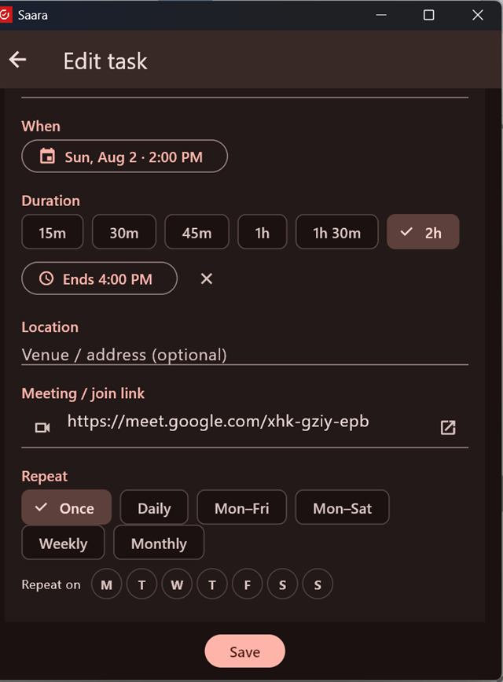

Type, paste, talk, or snap — the fastest capture wins. AI is optional; the built-in parser works with no key.
Tap the + Task button to choose how to capture:
| Option | What it does |
|---|---|
| Type or talk a task | Opens the task form. Type, paste, or tap the mic to dictate. Parse reads it with the built-in parser (no key needed); AI from text structures a pasted message (e.g. a WhatsApp note) into fields (needs your key). |
| From a screenshot / photo | Pick an image → choose Task or Event → Saara reads it into fields with AI. The original image stays on the task so you can check the result. |
| Scan with camera | (Mobile) Same, live from the camera. |
| Meeting summary → tasks | Photograph minutes-of-meeting; AI pulls out every action item for you to review and create. |
| Tell Saara (voice/text) | Say it plainly — "add dentist Fri 4pm", "move gym", "mark done". Saara shows a confirm card before acting. |
| Attach a link or file | Paste a Google Doc/Sheet/any URL, or attach an image. |
However you capture, you land on the task card, where you can set the time, duration, location, meeting link, repeat, area, people and notes before you Release.
